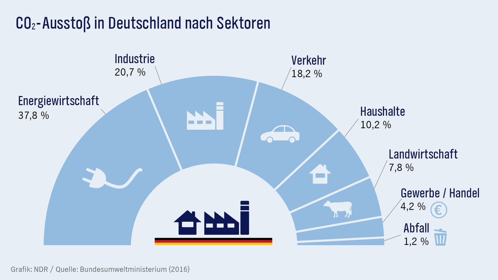
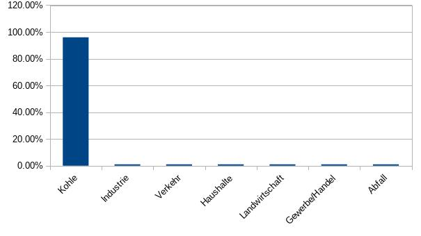

CO2 Verursacher nach Sektor
Die folgende Grafik werden die meisten wohl kennen:

Das paradoxe an dieser Darstellung des Sachverhaltes ist, dass nur die absolute Menge an CO
2 verglichen wird, diese aber in keiner Weise in Relation zum Nutzen für die Gesellschaft gesetzt wird.
Arbeitsplätze nach Sektor
"In den deutschen Braunkohletagebauen und angeschlossenen Kraftwerken arbeiteten letztes Jahr 20.891, in den Steinkohlekraftwerken sind schätzungsweise 8.400 Personen beschäftigt." (
Quelle)
Während Verkehr und Mobilität
von allen Menschen benötigt und täglich genutzt werden, so werden die Kohlekraftwerke nur für ca. 20% des Stromverbrauchs benötigt. Ein Abschalten hätte nur minimale Auswirkungen auf das BIP (ca. 1% weniger). Die Anzahl der Arbeitsplätze durch Verkehr und Mobilität lässt sich pauschal mit der Anzahl Bewohner Deutschlands gleichsetzen, da alle irgendwie davon abhängig sind, sogar die Arbeiter in Kohlekraftwerken selber.
CO2 Verursacher nach Nutzen für die Gesellschaft

Nur 30.000 Arbeitsplätze verursachen doppelt so viel CO
2-Emmissionen wie alle Autos, Schiffe, Flugzeuge und Züge zusammen. Je Arbeitsplatz gerechnet ergibt sich so eine 100 bis 1.000-fache Belastung für die Gesellschaft je Kohle-Arbeitsplatz.
Kohlekraftwerke 100- bis 1.000-fache Belastung für die Gesellschaft
- Sehr wenige Menschen bereichern sich durch Kohlekraft auf extrem hohe Kosten der Allgemeinheit
- Vorschlag für mehr Gerechtigkeit: Der Staat legt ab Stillegung der Kraftwerke über 20 Jahre jährlich 1 Mrd. Euro beiseite als Entschädigung sollte CO2 nicht für die von allen Wissenschaftlern weltweit vorhergesagten Katastrophen verantwortlich sein.
Im Gegenzug legt jedes Kohlekraftwerk, bis zur Stillegung, täglich 1 Mrd. Euro beiseite für die von Wissenschaftlern berechneten Folgeschäden.
- Alternative: Jedes Kohlekraftwerk muss ab sofort den täglichen CO2-Ausstoss zu 100% durch Anpflanzung CO2-Gleichwertiger Wälder nachweisen. Also täglich ca. X-Tausend Fussballstadien neue Bäume einpflanzen.
- * Die exakten Kosten der Klimakatastrophe lassen sich natürlich nicht berechnen, aber wenn die Klimawissenschaftler nur im entferntesten recht behalten, dann ist die hier angesetzte "Eine Milliarde Euro pro Tag und Kohlekraftwerk" noch das kleinste Problem.
Kohlekraftwerke verursachen täglich 1 Mrd. an Schaden
- Der Klimawandel ist, genauso wie COVID-19, exponentiell. Das bedeutet je früher man reagiert, desto kleiner werden die Auswirkungen.
- Jeder Tag den Kohlekraftwerke weiterhin CO2 ausstossen, bedeutet entsprechend Milliarden an Kosten für unsere folgenden Generationen.
- Die Kohle-Industrie verursacht täglich 1 Mrd. Euro Schaden, nur um selber 1 Mio zu verdienen - das ist ein Faktor von 1:1000 zu Lasten aller!
- Die RWE AG hat sogar je 21,7 Mitarbeiter innerhalb von 10 Jahren bereits ein Menschenleben getötet! (Quelle)
CO2-Emissionen fair nach Nutzen besteuern
Ein möglicher zukunftsfähigr Ansatz könnte die CO2-Emissionen ins Verhältniss zum Nutzen, also praktikablerweise im Verhältniss zur Wirtschaftsleistung, zu beschränken. Das gleiche wird vielerorts mit z.B. Müll / Haushaltsmüll oder Trinkwasser geschehen, wo eine gewisse Grundmenge günstig für jedermann zu verfügung steht, und darüber hinausgehender Verbrauch exponentiell teurer wird.